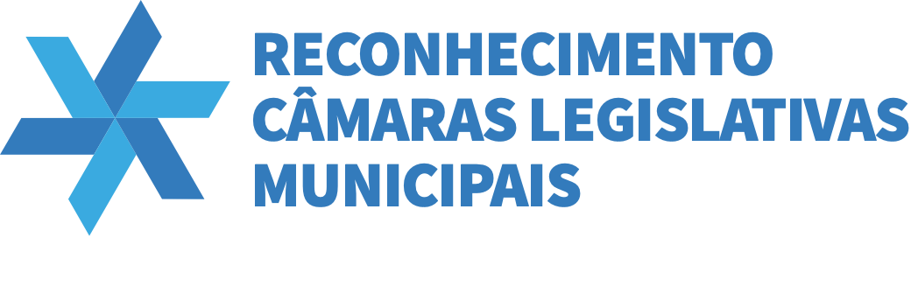

A edição de 2026 foi concluída. Conte o que funcionou e o que podemos melhorar.
Abaixo estão as perguntas comuns e os três caminhos específicos. No preenchimento, cada pessoa vê somente o caminho do perfil escolhido.
Uma escuta sobre os pontos positivos, os desafios e as melhorias para futuras edições. O feedback não altera os resultados de 2026.
As perguntas seguem as duas notas metodológicas de 2026 e a apresentação fornecida: 44 critérios institucionais e 32 parlamentares.
O NPS é calculado a partir da pergunta de recomendação: percentual de notas 9–10 menos percentual de notas 0–6. As notas 7–8 são neutras. Respostas em branco e “não sei avaliar” ficam fora do cálculo.
Use o comprovante recebido ao enviar. A exclusão remove sua resposta deste formulário e do painel e não pode ser desfeita.
Para acesso, correção ou outros pedidos, consulte o contato em Privacidade e LGPD.
Use o catálogo para localizar o item a que se refere sua sugestão. Os códigos se repetem entre os dois diagnósticos; confira o público.